|
| ||
|
| ||
May 15, 1998
Intranets are an effective means for distributing information in an organization and for providing a powerful and flexible infrastructure for team® collaboration. The Microsoft® FrontPage® Web site creation and management tool provides exceptional ease-of-use, advanced site management, and seamless integration with existing applications, such as Microsoft Office, making it an excellent choice for building and managing your intranet. This paper provides an overview of the key concepts, along with special tips, that you'll need to know when creating an intranet using Microsoft FrontPage. This includes:
How to properly structure the content of your intranet FrontPage-extended Web sites
Optimizing FrontPage authoring and administration performance
Managing Web site permissions and security with FrontPage
This paper assumes that you are already familiar with Web
server technologies and concepts, and that you have used
FrontPage for basic Web site creation and management. For
more detailed information on administering and managing a
FrontPage-based Web site please refer to the FrontPage
Server Extensions Resource Kit (SERK) at
http://officeupdate.microsoft.com/frontpage/wpp/serk/default.htm
 .
.
One of the great advantages of using FrontPage for creating and managing your intranet is the intelligence with which FrontPage can communicate with your Web server. Through the FrontPage Server Extensions FrontPage is able to intelligently manage and update hyperlinks, automatically update navigation bars as your navigation structure changes, and even manage security permissions for your Web site. When the FrontPage Server Extensions are installed on a Web site, this site is called a FrontPage-extended or FrontPage-based Web site. While a FrontPage-extended Web site is very similar to a Web site that does not have the FrontPage Server Extensions installed, there are a few fundamental differences and advantages to a FrontPage-extended Web site that will be discussed in greater detail herein. When creating and managing an intranet using FrontPage the key points and tips that you should keep in mind are:
Just as every organization is different, so will every intranet scenario potentially have its own unique requirements. However, organizations commonly exhibit either one or both of these intranet structures:
A per department intranet maps to the organization's departmental hierarchy and is usually either centrally managed on a main Web server by the organization's full-time Web site administration team, or is more de-centralized where the various departmental Web site administrators manage the department related sections of the company intranet, while the main site administrator manages the home page, common navigation, etc. The target audience of the per department intranet is usually the majority of company employees and management.
In contrast, a departmental intranet is usually a Web site designed specifically for a particular department's information sharing and collaboration needs and is most often created and managed by someone within the department for whom Web site administration is only one part of their job. Often a departmental intranet is linked to the larger company intranet, but not necessarily since its target users are members of the department rather than all employees throughout the company.
Both of these models share similar characteristics, and often you'll find a combination of these models used in intranets. While for simplicity's sake the examples in this paper showcase the per department intranet, the same principles and practices can be applied to the departmental intranet.
When creating an intranet it's often most logical to configure it so it directly maps to the company's organizational structure resulting in one Web site per department, configured as a sub-level of the top-level intranet pages. For example, the intranet home page would provide an index of company departments with associated links to their intranet Web sites. The company's intranet Web site administrator would organize the content of these different sections of the intranet hierarchically, with the top content stored in the root folder of the Web site, and the department content located in sub-folders off the root.
The Web site structure and hard drive storage (folders) used to support the per department intranet typically look like this:
Table 1. Typical configuration of a per department intranet
| Web Structure (URLs) | Hard Drive Storage (Folders) |
|---|---|
|
Root Web:
http://arcadiabay/ Index of departments with associated links to their Web sites Global scripts |
C:\InetPub\wwwroot
default.htm companylogo.gif \scripts search.asp |
|
Human Resources Web:
http://arcadiabay/HR Policies manual |
C:\InetPub\wwwroot\hr
default.htm \policies hrpolicy.doc |
|
Benefits Web:
http://arcadiabay/HR/Benefits Health insurance information |
C:\InetPub\wwwroot\hr\benefits
default.htm \health |
|
Finance Product Group Web:
http://arcadiabay/Finance Financial reports |
C:\InetPub\wwwroot\finance
default.htm |
Common characteristics of the per department intranet are:
Example:http://arcadiabay/
Example:Human Resources Web site at http://arcadiabay/HR/
Example:Finance Web site at http://arcadiabay/Finance/
In the example in Table 1 above, the Human Resources (HR) department and the Finance department each have Web sites on the Arcadia Bay intranet. The contents of each Web site are stored on the same machine as the root Web site, in sub-folders just below the root Web site's folder. Also, HR manages the Benefits team so the Benefits Web site is "beneath" the HR Web site, and its contents appear in a sub-folder of the \HR folder in the file system.
In the scenario above a variety of Web site permissions are used:
Table 2. Per department intranet access rights
| Intranet information | Who can browse | Who can author |
|---|---|---|
| HR Web site home page | Everyone in the company | HR employees deemed authors |
| Benefits info in the HR Web site | Everyone in the company | Only Benefits team authors |
| Finance Web site home page | Everyone in the company | Only Finance Webmaster |
| Current quarter financial reports | Only executives and report authors | Only Finance report authors |
It is possible to create and manage an intranet Web site like the one above at the file system level, copying, move and deleting files through, for example, the Windows Explorer, while setting permissions via the Web server's administration tools. However, as the number of pages and people involved in the intranet increase, managing changes becomes increasingly time consuming and prone to error, such as broken hyperlinks and incorrect permissions settings. Using FrontPage to create and manage your intranet is an excellent solution for automating many common tasks, managing Web site security, and keeping your Web site fresh and up to date. Yet, while using FrontPage certainly makes it easier to create and manage an intranet, a Web site administrator must understand the unique configuration structure of FrontPage-extended Web sites in order to effectively take advantage of FrontPage in an intranet environment.
The basic structure for FrontPage-extended Web sites hinges on the sub-Web site concept, and how sub-Web sites relate to the Web server's root Web site. The sub-Web site concept, in turn, is at the heart of issues such as permissions and performance that you'll want to consider when designing the structure of your FrontPage-based intranet.
A FrontPage-extended sub-Web site is really nothing more than a Web site that FrontPage logically manages as a single entity. For the Arcadia Bay intranet example, it would make sense for both the Finance Web site and the HR Web site to each be their own sub-Web site. Each is a logical grouping of intranet content that pertains to the particular department, and each is managed by different people.
Several defining characteristics of root Web sites and sub-Web sites are:
Key Characteristics
Example: On a server machine called arcadiabaythe root content is located in c:\inetpub\wwwroot and has a URL of http://arcadiabay/
Key Characteristics
Additional Characteristics
Webs requiring separate permissions must be set up as a separate FrontPage-extended sub-Web site.
While permissions can be applied to separate sub-Web sites, the FrontPage Server Extensions architecture does not currently support setting separate permissions on individual folders or files within FrontPage. So, for example, if you created the HR Web site with the Benefits group's content as a part of the HR Web site, you would not be able to specify unique permissions for the Benefits content. All the content of the HR Web site, including the Benefits group's content, will have the exact same permissions settings.
This particular characteristic of FrontPage-based Web sites is likely the single most important point to consider when designing your FrontPage-based intranet. And while permissions issues in general will be a top priority in managing your intranet, and is something we'll explore more fully later, another subject to consider at this stage when designing your intranet is Web site scalability and performance.
Certainly scalability and performance issues are a top consideration when building your intranet. Common questions about this are:
How much content can I have on my Web site before performance is affected, both during author-time and browse-time?
How many sub-Web sites can I have?
Should I organize my Web sites in any particular way to optimize performance?
In contrast to simple HTML editors, which only deal with one Web page at a time, FrontPage is a Web site creation and management tool that manages your Web site in its entirety, managing all content, links and navigation relationships among the Web pages and elements of your Web site.
As we all know, the number of pages and elements in a Web site can grow very quickly. In order to adequately deal with the inevitable growth of your Web site it's helpful to plan out the structure of your Web site ahead of time to give you the best performance even when the number of pages and elements do become a bit unwieldy.
Fortunately, even if you fail to plan for growth, FrontPage features such as automatic link fix-up and URL-renaming make it easy to re-organize your content later without breaking hyperlinks or your navigation structure. However, it's important to understand how performance is affected by the way in which your Web site is structured, so you can either plan ahead for growth, or at least know how to best address these issues if they arise at a later date.
FrontPage 98 has made tremendous advances in improved performance and scalability over previous versions. For example, with FrontPage 97 opening large Web sites for authoring sometimes took several minutes to load. FrontPage 98 uses an incremental method of reading Web site content information into memory, which drastically improves the time it takes to open a large Web site, so it takes only seconds rather than minutes to load.
These are some of the unique characteristics of FrontPage to keep in mind when designing your intranet for optimum authoring-time performance:
When opening a Web site FrontPage will read some information from each of the files that exist in the root folder of the Web site. The time it takes to read this information scales linearly with the number of documents in the root folder. A rule of thumb is: the fewer files located in the root folder of the Web site, the faster it'll open in the FrontPage Explorer.
Switching focus to another sub-folder that has not yet been viewed in the FrontPage Explorer during the authoring session will cause FrontPage to read some information from each of the files that exist in that sub-folder. The time it takes to read this information scales linearly with the number of pages in the sub-folder.
While generally not necessary from time to time you may choose to use the Recalculate Hyperlinkscommand. Recalculate Hyperlinks will parse each page in your Web site and can take some time to execute if you have thousands of pages in your Web site.
So to optimize for scalability and performance a key tip in using FrontPage to set up you intranet is:
Break your Intranet content into logical sub-Web sites and sub-folders to improve performance of Web site authoring and management operations on large sites.
As previously mentioned in the sub-Web site characteristics section, there are no hard-coded limits on the number of sub-Web sites you can have on a Web server, and the number of pages in your Web site is unlimited as well. However, practical limitations, such as available hard drive space and the amount of time it takes to recalculate hyperlinks on your Web site, are things to consider. While performance and scalability varies widely depending on things such as how a Web site is organized and the system configuration, customer feedback suggest that 5000 - 8000 pages per FrontPage 98 sub-Web site is a very reasonable upper limit range with minimal performance impact.
When creating your intranet structure, the way you organize your content can impact both permissions management flexibility and authoring and administrative performance. To build for greatest flexibility and performance ask yourself these two questions:
Will the intranet have sections that require unique authoring or browsing permissions?
How much content will each sub-Web site likely contain?
Then follow these best practices:
Table 3. Best practices for structuring a FrontPage-based intranet
| Practice | Benefit |
|---|---|
| Logically break content into sub-Web sites |
Greater control of permissions
Authoring and management performance optimization |
| Break related sub-Web site content into sub-folders | Authoring and management performance optimization |
While understanding the basic Web site architecture used by FrontPage helps to initially design and set up an intranet, security issues and managing permissions will comprise a larger portion of your common Web site administration activities. As various sets of permissions and security settings change over time FrontPage is an incredibly powerful and efficient tool to use to manage those permissions.
Regardless of what software you are running, the two major security issues when you host Web sites are:
Hosting Web sites, even on an intranet, opens the host computer to a wider community of users. Authentication is the process of allowing users access to the Web site based on user names and passwords or based on IP addresses.
Web sites can be inadvertently configured so that undesirable programs can run on the host computer. For example marking a directory executable to allow a script to run on the host computer can allow a program in that directory to do anything within the limits of the host computer's resource protection scheme. A clear understanding of Web server security in general, and how FrontPage interacts with the Web server security mechanism, is critical in order to properly deploy a secure Web site.
FrontPage addresses these security issues by "piggy-backing" on the built-in security mechanisms of the host computer. FrontPage manages the Web server's permissions through one of several tools: the FrontPage Server Administrator, the fpsrvadm command line utility, the HTML Administration Forms, or through the FrontPage interface, via the Permissions dialog, found on the Tools menu in the FrontPage Explorer. The Permissions dialog is shown below in Figure 1:
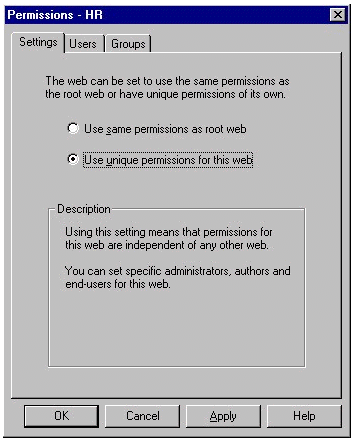
Figure 1. FrontPage Permissions dialog
By default a FrontPage-extended sub-Web site will inherent the same permissions as the root Web site. In the FrontPage Permissions dialog, as shown in Figure 1, you can assign unique permissions for a sub-Web site. By choosing unique permissions for a Web site it is then possible to set up roles for specific users and user groups, ensuring the right people have correct access rights, while others are properly prevented from gaining access to operations to which they should not have rights.
The FrontPage Server Administrator, fpsrvadm command
line utility, and the HTML Administration Forms are three
additional tools that can be used for Web site permissions
management. These tools are designed to give a Web
administrator the ability to manage Web site permissions
without having FrontPage installed, and in the case of the
remote administration Forms, to configure permissions
remotely through a Web browser from computers other than
the Web server's host computer. For demonstration
purposes we'll use the FrontPage Permissions dialog
but either the FrontPage Server Administrator, the
fpsrvadm utility, or the HTML Administration forms
could also be used. For more information on these tools,
please refer to the FrontPage Server Extensions Resource
Kit (SERK) at
http://officeupdate.microsoft.com/frontpage/wpp/serk/default.htm
 .
.
FrontPage uses three user types or roles for its permissions methodology: End-Users, Authors, and Administrators. These roles can be assigned to either individual users or to a group of users by choosing either the Users tab or Group tab in the Permissions dialog. Permissions are cumulative, so while End-users can only browse, Authors can both browse and author, and Administrators can browse, author, and administer a Web site.
Most Web server's already contain administration tools that give you control over creating and managing permissions for your Web site. So which method should you use, the FrontPage Permissions method, or the Web server's administration tools? While it is possible to use the Web server's administration tools to set permissions on a FrontPage-based Web site you should always use the FrontPage Permissions method when managing FrontPage-extended Web sites. The FrontPage Server Extensions require particular permissions settings that FrontPage manages automatically. By using the Web server's administration tools to manage permissions it's too easy to accidentally break the functionality of a FrontPage-based Web site. By using the FrontPage Permissions method, FrontPage seamlessly manages the settings both for the FrontPage Server Extensions and the Web site's user access rights.
While FrontPage will piggy-back on the security mechanism of any supported Web server there are several unique points of integration between FrontPage and different Web servers. For example, on the UNIX operating system, FrontPage includes a special patch for the Apache Web server that enhances the FrontPage/Apache security mechanism integration. On the Windows NT platform, the FrontPage integration with Microsoft Internet Information Server (IIS) provides several advantages that make hosting your FrontPage-based intranet on IIS an attractive option.
Internet Information Server is a Windows NT based Web server that takes full advantage of the security and permissions mechanisms of Windows NT: Challenge/Response (NTLM) or Basic Authentication for user authentication, and NTFS for file permissions. As a result, FrontPage is able to leverage the network user and group management features of Windows NT, giving you greater permissions management efficiency than might be available on other platforms.
When hosting FrontPage-extended Web sites on IIS you can take advantage of the Windows NT User Manager to help expedite Web site permissions management. For example, you can create a Windows NT user group called HRAuthors, add the users you want to it, then in FrontPage add the HRAuthors group to the list of Human Resource Web site Authors. So the key tip here is:
If hosting your FrontPage-extended Web site on Internet Information Server use the Windows NT User Manager to expedite management of Web site Users, Authors, and Administrators.
When using FrontPage on a Windows NT-based machine running Internet Information Server two additional key points to keep in mind are:
For the greatest Web security use Challenge/Response (also called NTLM) authentication, rather than Basic.
In order to set permissions for a FrontPage-extended Web site host the Web site on an NTFS partition.
While FrontPage will work with both Windows NT authentication methods, Challenge/Response is recommended as it's more secure than Basic authentication.Also, Windows NT provides two file system partition options: FAT16 and NTFS. In order to create Web site permissions with FrontPage running on Windows NT the file system cannot be set up as FAT16, but rather must be an NTFS partition in order to activate FrontPage permissions management.
For more information on using Internet Information Server
to host your FrontPage-extended Web sites please refer to
the FrontPage Server Extensions Resource Kit (SERK) at
http://www.microsoft.com/frontpage/wpp/serk/  .
.
The Access Control List (ACL) feature of Windows NT gives you custom file and folder permissions capabilities. While it's possible to use ACLs to create custom permissions on files and folders via the Windows Explorer, you should not create custom ACLs on files and folders within your FrontPage-extended Web site. The reason is that trying to manually coordinate and manage ACLs via the file system while using FrontPage to manage other aspects of Web site permissions creates excessive permissions management complexity that can result in breaking Web site functionality. While the FrontPage Server Extensions Resource Kit (SERK) does provide information on how to do this, unless you're willing to invest the time to understand all the details, commit them to memory, and then trust you'll never forget any of it and never make a mistake, we recommend simply using FrontPage to manage your Web site's permissions. So another key tip to remember when using FrontPage to create and manage your intranet is:
If hosting your FrontPage-extended Web site on Windows
NT do not use
custom ACL's
Web site security is very important, whether on the
Internet or on your intranet. And while the above covers
many of the basics and key tips you'll need to get
started building a secure intranet using Microsoft
FrontPage, take the time to learn more about FrontPage and
Web site security by reading the "Security
Considerations" chapter of the FrontPage Server
Extensions Resource Kit at
http://officeupdate.microsoft.com/frontpage/wpp/serk/default.htm
 .
.
Having covered the basics of the FrontPage-extended sub-Web site concept and Web site structure, optimizing your FrontPage-based Web site, and managing permissions and security, let's now apply this information to a sample scenario of the Arcadia Bay Clothing company intranet.
In this scenario, the Arcadia Bay intranet is hosted on Microsoft Internet Information Server running on Microsoft Windows NT 4.0. The Arcadia Bay intranet Human Resources (HR) and Finance Web sites have these access characteristics:
Table 4. Access rights to Finance and HR Web sites
| Intranet content | Who can browse | Who can author |
|---|---|---|
| HR Web site home page and Benefits info | Everyone in the company | Only HR Webmaster and HR employees |
| Benefits info in the HR Web site | Everyone in the company | Only the Benefits team in HR |
| Finance Web site home page | Everyone in the company | Only Finance Webmaster |
| Current quarter financial reports | Only executives and report authors | Only Finance report authors |
Given the above characteristics of the Per Department HR and Finance Web sites it seems logical to create a new Web site in FrontPage for the Arcadia Bay intranet that includes both the HR and Finance Web sites like this:
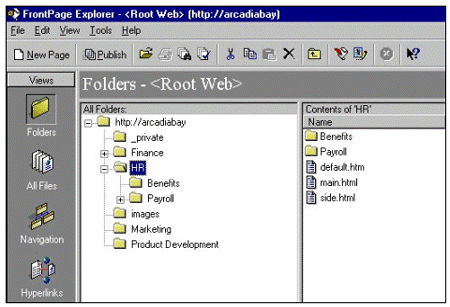
Figure 2. Centralized Arcadia Bay intranet Web site
In Figure 2 above, the Arcadia Bay company has one intranet Web site that is controlled by the Web site administrator. The HR and Finance areas are shown as sub-folders beneath the root folder of the root web site. All intranet links are relative and features such as automatic link fix-up and cross-page spell checking can take place in one central location from within one Web site.
However, security and performance considerations may suggest another way to configure these intranet Web sites. In the example above anyone who is given authoring permissions for the root Web site can also author on the HR and Finance Web sites and vice versa. Obviously this isn't always desirable. Also, when a Web site contains every department's Web sites, it's likely to grow quite large -- probably larger than is desirable for efficient Web site management. Recall the following about FrontPage-based Web sites:
Upon opening a folder or Web site the FrontPage Explorer reads each file in that folder (or root folder if opening a Web site)
Recalculating Hyperlinks parses each page in the Web site
Unique permissions can be applied only to separate sub-Web sites, not to sub-folders or files within a Web site
A Web site designed like the example in Figure 2 is likely to encounter performance issues as the site grows larger. Also, the type of granular Web site permissions required by the HR and Finance departments is not possible with this configuration. As mentioned earlier, probably the most important point to remember when designing your intranet is that unique permissions can be created only for sub-Web sites, and not for sub-folders or individual files within a Web site.
Since the HR Web site has unique security requirements, with authoring rights given only to the HR Web site administrator and members of the HR team, the HR Web site must be broken out into its own sub-Web site. With FrontPage, create the HR Web site as its own separate Web site, not as a sub-folder of the Arcadia Bay root Web site. Breaking the HR Web site into its own separate sub-Web site might look like this:
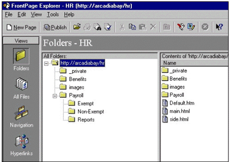
Figure 3. HR Web site as separate sub-Web site
As can be seen in Figure 3 the HR Web site shares the same Web server, arcadiabay, as the Arcadia Bay intranet root Web site. However, the two Web sites, http://arcadia/ (the root Web site) and http://arcadia/hr/ are mutually exclusive for authoring and administrative purposes. Note, though, that for someone browsing to either Web site there is no functional difference between the HR Web site when it's a separate sub-Web site, or when its part of the root Web site as a sub-folder, as shown at the beginning of this section in Figure 2.
In the FrontPage Explorer when you list the Web sites that are available on the arcadiabay Web server, you'll now see two Web sites: the root Web site, and the HR Web site, as shown in Figure 4:
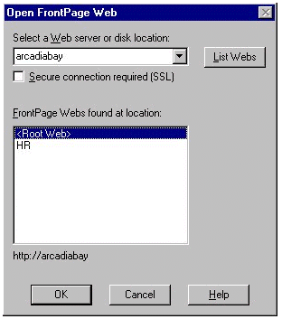
Figure 4. The ArcadiaBay Web server hosts the intranet Root Web site and HR sub-Web site
Since FrontPage no longer considers the HR Web site as a sub-section of the Arcadia Bay root Web site, separate and unique permissions can now be created for the HR Web site.
While the HR Web site does not appear in the Arcadia Bay root Web site folder in the FrontPage Explorer the HR folder does exist in the file system under the Web server's root folder, in this case c:\inetpub\wwwroot, as shown in Figure 5.
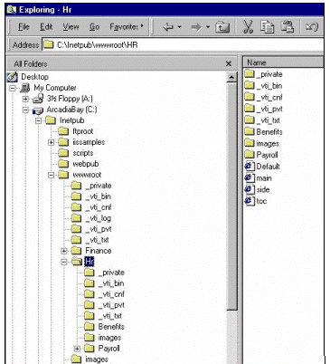
Figure 5. Windows Explorer shows HR content in a sub-folder of Web server's root folder
The position of the HR Web site's content in the file system has not changed at all, but now the \HR folder contains its own set of the FrontPage Server Extensions, as indicated by the normally hidden _vti folders, and FrontPage recognizes it as its own separate sub-Web site for authoring and administration purposes.
The key thing to remember is that a FrontPage sub-Web site is considered a separate entity distinct from the root Web site and other Web sites on the Web server. In the case of large intranets, breaking your intranet into distinct sub-Web sites per department optimizes Web site authoring performance, and gives you greater control over creating and managing unique Web site permissions.
The specified access rights for the HR Web site is that everyone can browse to this Web site, but only HR employees can author against this Web site. You create and manage these settings in the FrontPage Explorer Permissions interface, invoked from the Explorer's Tools menu:
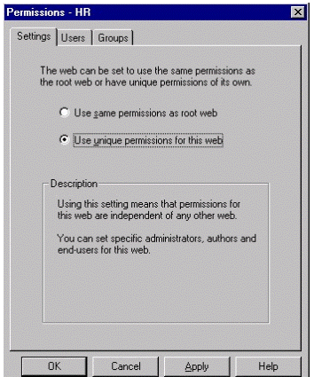
Figure 6. FrontPage Permissions dialog box
If permissions have not yet been created for a particular sub-Web site then the root Web site's permissions are inherited by default. To create unique permissions select the Use unique permissions for this Web option and click Apply.
Once the Use unique permissions for this Web setting has been applied, click on the Users tab to begin adding users and assigning access rights:
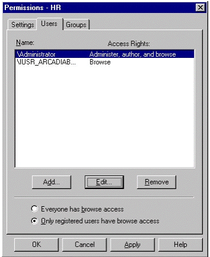
Figure 7. Setting access rights for Users of the Web site
In Figure 7 two users are listed: the anonymous user account, which has only browse privileges, and the administrator of the Web server who has all permissions: browsing, authoring, and administering.
To begin adding users to the permissions list, click on the Add button, which invokes the Add Users dialog:
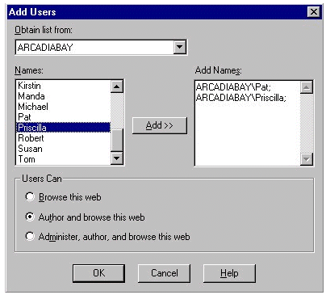
Figure 8. Adding users to list of HR Web site authors
Pat and Priscilla both work in the Human Resources group and should be added to the list of users who can browse and author the HR Web site. To add them, in the Add Users dialog select the Author and browse this Web option, then choose their names from the list and add them using the Add button. Once finished click OK and now Pat and Priscilla will have browsing and authoring access rights on the HR Web site.
Adding, removing, and managing individual users access rights like this works fine when the number of users is fairly small. But when the number of users is large, rather than adding each user individually, it's easier to leverage Windows NT user groups by clicking on the Groups tab in the FrontPage Permissions dialog and adding or removing Windows NT user groups from the permissions list. The HR Web site administrator simply adds the appropriate user group to the Web site permissions list once, and as personnel move in and out of the Human Resources group the company network administrator handles updating the Windows NT user group. Then, since it's the Windows NT user group that has been given permissions on the Web site, rather than the individuals moving in and out of HR, these changes are automatically incorporated into the Web site permissions.
Before adding a group to the FrontPage-extended Web site permissions list create a Windows NT user group that contains the users who will be given authoring rights. In Windows NT 4.0 launch the User Manager from the Windows Start menu:
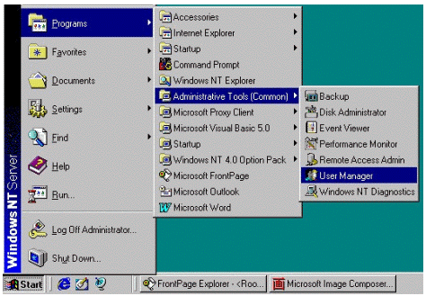
Figure 9. Launching Windows NT User Manager
In the Windows NT User Manager, create a new user group by choosing New Local Group from the User menu:
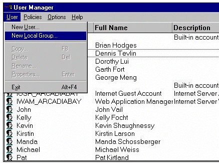
Figure 10. Creating a new user group in Windows NT User Manager
Next, in the New Local Group dialog box type "HRAuthors" in the Group Name field, give it a description, then click OK:
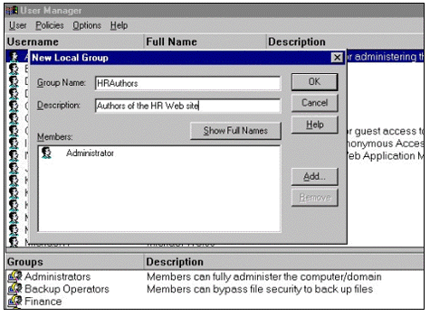
Figure 11. Creating a new local user group called HRAuthors
To add new users to the HRAuthors group, click on the Add button and you're presented with a list of users and groups you can add. In this case, the list of names is taken from the local server machine, arcadiabay, but it could also come from another network domain server.
In the Add Users and Groups dialog in the Windows NT User Manager, choose the names you want and click Add to add them, then click OK to commit your changes. In Figure 12 below, Pat and Priscilla have been added to the HRAuthors Windows NT user group:
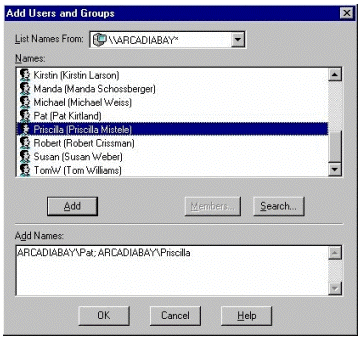
Figure 12. Adding users to the HRAuthors Windows NT user group
The newly created HRAuthors user group can now be given unique Web site access permissions in the FrontPage Permission dialog.
To assign Web site access rights to a new group of users, select the Groups tab in FrontPage:
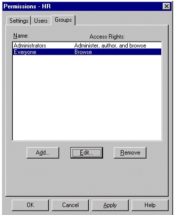
Figure 13. FrontPage Permissions dialog box: Access rights for user groups
In Figure 13 currently the groups Administrators and Everyone have been assigned access rights to this Web site.
Choosing the Add button will bring up the Add Groups dialog where you can add the HRAuthors group to the list of HR Web site users and groups that can both author and browse this Web site:
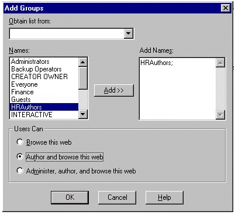
Figure 14. Adding the Windows NT user group HRAuthors to the HR Web site via theFrontPage Permissions Add Groups dialog
After clicking OK you'll see HRAuthors has been added to the Groups list with "Author and browse" access rights:
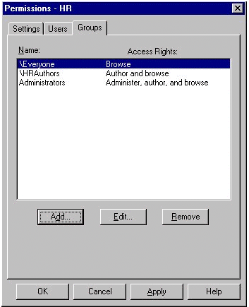
Figure 15. HRAuthors added to permissions list
So, now the HR Web site, a sub-Web site on the arcadiabay Web server, is set up with unique permissions: everyone can browse to the HR Web site, but only HR employees can author against it, and only administrators can administer it. And when HR personnel change, the permissions settings for the HR Web site will automatically mirror the changes as the network administrator updates the Windows NT HRAuthors user group.
The sample Arcadia Bay Clothing company intranet, as you might recall, also contains Benefits and Finance Web sites. In this scenario the next steps would include configuring the Benefits and Finance Web sites much like we did the HR Web site, setting up each as a separate FrontPage-based sub-Web site, then creating and adding to the FrontPage permissions list, Windows NT user groups for the users you wish to have authoring and/or administering access rights. Doing so ensures a secure and easily managed intranet that can readily grow along with the expansion of the organization's information sharing and collaboration needs.
Using Microsoft FrontPage is a great way to create and manage an intranet, whether a per department intranet or a departmental intranet. While it's important to understand the concept and characteristics of FrontPage-extended sub-Web sites, designing an intranet with FrontPage and its unique site wide oriented features such as cross-page spell checking, automatic link fix-up, and automatic navigation bars, makes it easy to keep your intranet site up-to-date, organized and secure. And if you're running your intranet on Windows NT and using Microsoft Internet Information Server as your Web server you can take advantage of the users/groups administration capabilities of Windows NT, optimizing access rights administration tasks for both the network server and FrontPage-based Web sites.
As your organization's intranet needs grow, FrontPage
can also serve as a key component of a larger scale
solution that includes the powerful capabilities of some of
the other Microsoft enterprise-oriented products, such as
Microsoft Index Server, Microsoft Site Server, the
Microsoft® Visual
SourceSafe® version control system, and
Microsoft® Visual InterDev™. For more
information on Microsoft FrontPage and other Microsoft Web
site-related products and technologies please visit the
FrontPage Web site at
http://www.microsoft.com/frontpage/  .
.
Did you find this material useful? Gripes? Compliments? Suggestions for other articles? Write us!
© 1999 Microsoft Corporation. All rights reserved. Terms of use.